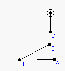
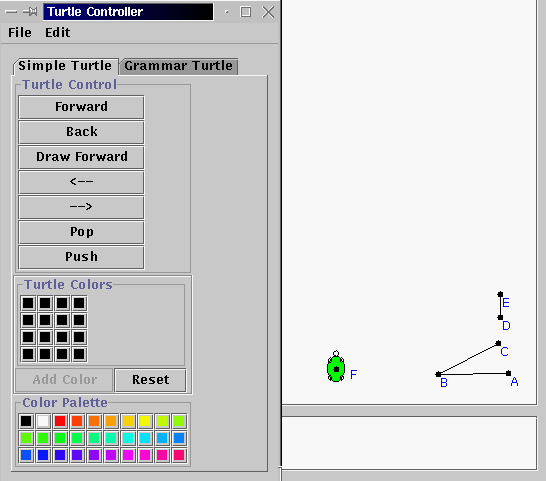
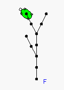
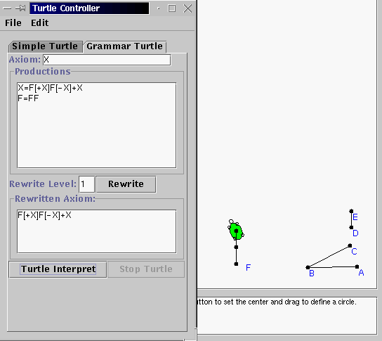
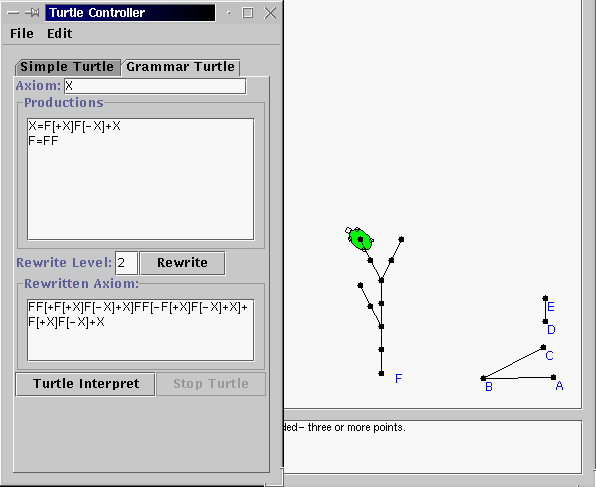
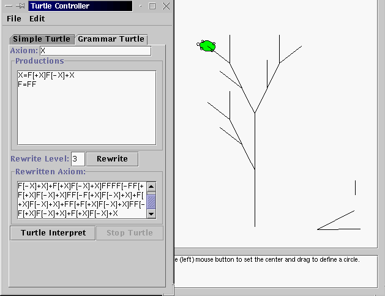

Introduction: What makes many plants hard to represent with simple geometric figures like circles and lines is their branching structure. A branch of a tree often looks much like the tree itself, and a branch's sub-branches look like the branch itself, etc. To model branching, we need a way to represent the branching structure itself as a blueprint, much like the DNA molecule is a blueprint for human growth. We will use the turtle geometry capability of Geometry Explorer to carry out blueprint instructions.
1. Start up Geometry Explorer. To create a turtle first we need to create a turning angle and a heading vector for the turtle. These will control how the turtle turns and moves forward. To create the turning angle and heading vector create an angle ABC and a segment DE as shown below.

2. To define the turn angle for the turtle select points A, B, and C (in that order) and then choose "Turtle Turn Angle" under the "Turtle" menu. To define the heading vector select D and E and choose "Turtle Heading Vector" under the "Turtle" menu. Now, we can create a turtle. The turtle needs to know where it is starting from, so create a point (F in the figure below) and then select this point and choose "Create Turtle at Point" under the "Turtle" menu. A nice green little turtle will popup at F. It will be pointing in the direction of the heading vector. A "Turtle Controller" dialog box will also popup. This is the main controlling mechanism for our turtle. try hitting the buttons in the "Turtle Control" group (e.g Back, Pop, etc) to see how we can make the turtle travel around. Then, undo your actions until the turtle is back at F.

3. To create a branching structure blueprint, we will use symbols to represent turtle actions. "F" will represent draw forward, "+" and "-" will represent turning left and right and "[" and "]" will represent the push and pop action. When we do a "push" we store the turtle's location. When we do a "pop" the turtle immediately returns to that location. We will also use a symbol "X" to denote a virtual node of the plant that we are trying to create. Think of this as being the potential growth of the plant at a branching node. Thus, initially the plant as a seed can be represented by "X" itself as there are no branches. During the first period of growth suppose that the plant produces branches as listed below.

4. How can we represent this using our symbolic language? Well, it is clear that the plant grew in such a way that three new branch nodes were created from the original potential node at F. Thus, if we started with "X" by itself, we must have replaced X with three new X's. Also, these branches were created at an angle to the main branch, so there needs to be some turning by the turtle. Finally, each new branch has length of 2, if we consider one move forward to be a unit length for the turtle. What kind of a "sentence" will represent this plant? Consider the following:
The second equation just says that a length of stalk will grow twice
as long in the next generation.
Putting this all together, we have in these two equations a blueprint
for the growth of the plant. Let's see how this works.
5. In the "Turtle Controller" window click on the "Grammar Turtle" tab to get the grammar controller for the turtle. Type in "X" for the axiom, and the two equations above in the "Productions" window, and 1 in the "Rewrite" box, and hit re-write. The axiom "X" will get replaced according to the rules in the Production area. Now, hit the "Turtle Interpret" button and watch the turtle interpret these commands.

6. We did not get the branches yet, as the three new X's are potential branches. Undo the turtle back to F again. Then, in the grammar window type in "2" for the rewrite level and hit rewrite. Look at the new sentence and convince yourself that the level 1 sentence was replaced correctly. Then, hit "Turtle Interpret" again to see the plant starting to take shape.

7. Undo the turtle back to F one last time. Then, use a rewrite level of 3 and have the turtle interpret this. To get a nicer picture let's hide all of the points. Choose "Hide All -> Points" under the "View" menu. We can clearly see the outline of a plant structure here, without the leaves.

8. Try out your own version of an axiom and rewrite rules to see what
kinds of plants you can model. This method of using grammatical sentences
and re-writing to model plants was originally discovered by a fellow named
Lindenmayer, and thus this system of modeling plants has come to be known
as the "L-System".